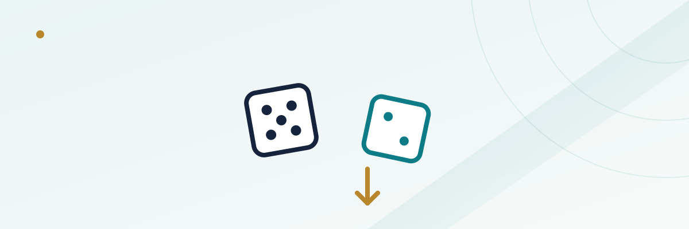

Don't Pass and Don't Come: Betting Against the Shooter in Craps

Walk up to almost any craps table and you'll see a crowd of players leaning over the rail, cheering for the shooter to hit a number. What you'll rarely see is anyone standing at that same table quietly betting the opposite way — that the shooter sevens out before making their point. That's the Don't Pass line, and its close cousin the Don't Come bet, and together they flip the entire social contract of the game: you're now rooting against the person everyone else at the table wants to see win.
In this guide
How Don't Pass works, step by step
A Don't Pass bet is placed before the come-out roll, same as a Pass Line bet, but it wins and loses on the opposite outcomes. On the come-out roll, a 2 or 3 wins for Don't Pass immediately, a 7 or 11 loses immediately, and a 12 is a push (more on that in a moment). Any other number — 4, 5, 6, 8, 9, or 10 — becomes "the point," and the bet moves into its second phase: now the Don't Pass bettor wins if a 7 rolls before the point number repeats, and loses if the point repeats first. It's the Pass Line bet's mirror image in every respect except one deliberate asymmetry, which is what keeps the house edge from swinging entirely to the player's side.
The 12-push rule (or is it 2?) and why it exists
That asymmetry is the "barred" number on the come-out roll. At most tables, a 12 rolled on the come-out is a push for Don't Pass bettors — not a loss, but not the win it would be if all craps numbers paid out symmetrically. Some tables bar the 2 instead of the 12; either way, exactly one of the two ways to roll craps is neutralized into a tie rather than a win. Without that rule, Pass Line and Don't Pass would both win on their own dedicated numbers and both lose on the same shared numbers (7 and 11 losing for one side has to be balanced somewhere), which would leave the house with no edge on either side of the line — a mathematical impossibility for a casino game. Barring one number is the mechanism that keeps a small house edge on both sides of the bet simultaneously.
Don't Come: the same idea, started mid-shooter
Don't Come is functionally identical to Don't Pass, just placed after a point has already been established rather than on the come-out roll. Once a shooter has a point working, a player can place a Don't Come bet, and the very next roll acts like that bet's personal "come-out" — a 2 or 3 wins it outright, a 7 or 11 loses it outright, a 12 (or 2, depending on the table) pushes, and any other number becomes that specific bet's own point, tracked separately on the layout from the shooter's main point. A player can have multiple Don't Come bets working at once, each tied to its own number, which is how experienced "wrong" bettors build coverage against several point numbers during a single shooter's turn rather than betting only against the table's one main point.
Laying odds: the free-odds bet in reverse
Just as Pass Line bettors can back up their bet with free odds once a point is set, Don't Pass and Don't Come bettors can "lay odds" — placing an additional wager, paid at true odds with zero house edge, that the 7 arrives before the point repeats. The mechanics flip compared to laying odds on the come-line side: because the don't bettor is now rooting for the more likely outcome (7 before a specific point number), laying odds means risking more to win less, the reverse of taking odds on the Pass Line, where you risk less to win more. A player laying odds against a point of 4 or 10, for instance, is laying 2-to-1 — risking twice the payout to win the bet, since a 7 is twice as likely as a 4 or 10 to appear next. Laying odds against 5 or 9 is 3-to-2, and against 6 or 8 it's 6-to-5. In every case, the underlying odds bet itself carries no house edge; it's a true, mathematically fair side wager layered on top of the base Don't Pass or Don't Come bet, which does carry a small edge.
A worked example
Say a player bets $10 on Don't Pass, and the come-out roll is a 6, establishing the point. The player then lays full odds against the 6, which pays at 6-to-5 in the house's favor for the layer, meaning risking $12 to win $10 (a standard way tables structure 6-and-8 lay odds to keep round-number payouts). If a 7 rolls before another 6, the player wins the original $10 flat bet plus the $10 from the odds bet, for $20 in winnings against $22 total risked ($10 flat plus $12 laid). If a 6 rolls again before a 7, the player loses both the $10 flat bet and the $12 laid on odds — the mirror image of what a Pass Line bettor backing the same point with odds would experience, just with the risk and reward proportions reversed.
Don't Pass vs. Pass Line, side by side
| Feature | Pass Line | Don't Pass |
|---|---|---|
| Come-out roll wins on | 7 or 11 | 2 or 3 |
| Come-out roll loses on | 2, 3, or 12 | 7 or 11 |
| Come-out roll push | None | 12 (or 2, table-dependent) |
| After the point is set, wins on | Point repeats before a 7 | 7 before the point repeats |
| Free-odds bet direction | "Take odds" — risk less, win more | "Lay odds" — risk more, win less |
| Approximate house edge, flat bet only | ~1.41% | ~1.36% |
The house edge difference is small but real — Don't Pass runs a shade lower than Pass Line specifically because of how the barred 12 (or 2) interacts with the relative frequency of craps numbers versus 7 and 11 on the come-out roll. Once free odds are added on either side and the bettor takes full advantage of them, the effective edge on the combined wager drops well below 1% for either bet, since the odds portion itself is mathematically fair. For more on how casinos build in their advantage generally, see our guide on how house edge works.
Why these bets get a cold reception at the table
Craps has a strong social dimension that most other table games don't — the shooter rolls for everyone, and a hot streak turns the whole rail into a shared celebration. Betting Don't Pass means actively hoping the shooter fails, which puts a "wrong" bettor in quiet opposition to the rest of the table's interests every single roll. It's not against the rules anywhere, and plenty of experienced players bet the don't side specifically because the math is marginally better, but new players are sometimes surprised by the chilly looks a large Don't Pass bet can draw from an otherwise friendly table, especially during a hot shooter's run.
Common mistakes
The most common mistake is not realizing lay odds require risking more than they return, which can make a Don't Pass bettor's total exposure on the table larger than a Pass Line bettor's for the same-size flat bet — worth budgeting for in advance rather than being surprised by mid-hand. A second is forgetting that Don't Come bets tracked against different point numbers are independent of each other and of the shooter's main point, which means a single roll can resolve one Don't Come bet while leaving others (and the main line) untouched. A third is assuming the small house-edge advantage over Pass Line is large enough to matter over a short session — at roughly a five-hundredths-of-a-percent difference, it's a real edge in the aggregate but not something that will visibly change the outcome of any one trip to the table. If you're new to craps generally, our craps basics guide covers the Pass Line side of the layout this bet mirrors.
Frequently asked questions
Is Don't Pass actually a better bet than Pass Line?
Marginally, yes — Don't Pass carries a slightly lower house edge, roughly 1.36% versus 1.41% for Pass Line, on the flat bet alone. The difference is real but small enough that it won't meaningfully change a short session's results.
Why is a 12 (or 2) barred on the come-out roll for Don't Pass?
Barring one number turns what would otherwise be a symmetrical bet with no house edge into one with a small edge on both the Pass Line and Don't Pass sides. Without it, the math wouldn't leave the casino any advantage at all.
Can I place more than one Don't Come bet during a single shooter's turn?
Yes. Each Don't Come bet establishes its own point independently, so a player can have several working against different numbers at the same time, separate from the shooter's main point.
Does laying odds on Don't Pass have a house edge?
No. The odds portion of the bet, on either side of the line, is paid at true mathematical odds with no built-in house advantage. Only the original flat Don't Pass or Don't Come wager carries the casino's edge.